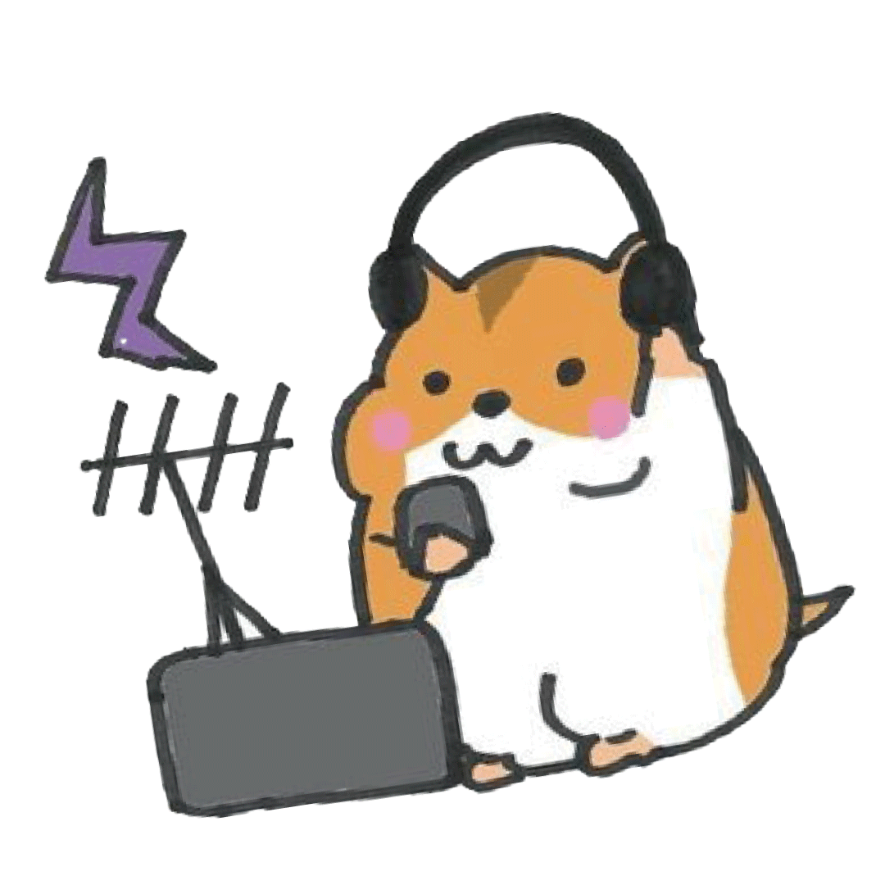

アマチュア無線クラブっていったいどんなサークルなの...?

「アマチュア無線」を中心に、通信・電子工作・音響などを手広く扱うサークルです！
基本的にはアマチュア無線を使った活動を中心に、音響・ネットワークなど「技術」と呼べそうなものはなんでも幅広く扱うサークルです。各学生がそれぞれの興味に対して自由に取り組み、学び、遊んでいます。


そもそもアマチュア無線って何ができる?
電波を出して世界中の人と交信したり、無線機を使って実験したりできます！
アマチュア無線は、電波を使って世界中の人と交信したり、アンテナや機材を工夫して電波の飛び方の違いを楽しんだり、 時には災害時の通信に役立ったりと、幅広い楽しみ方のできる趣味です。
ちなみに、「アマチュア無線」をやるためには総務省発給の無線従事者免許が必要です。なんだか難しそう、と思う方もいるかも。
でも大丈夫、私たちと一緒なら、資格不要の「体験運用」ができます！


YEVの1年1年間のスケジュール
「コンテスト」に参加したり、合宿をしたり、イベントに出展したり...
無線は4月から11月あたりまでがオン・シーズン。普段の活動場所から「コンテスト」に参加してほかの無線家たちと競い合ったり、学外のイベントに出展したり、時には合宿をやってみたり。
オフ・シーズンである冬期間も精力的な活動を行なっています。


1年間のスケジュールを見る
コンテスト&皐月祭
5月には東京農工大学の学園祭「皐月祭」に出展し、一般の方に向けた公開運用やモールス体験、黒電話体験などを実施して盛り上がります。また、「ALL JA コンテスト」に参加し、24時間体制で全国の局と交信を楽しみます 。初心者の新入生はこの時期、先輩のサポートを受けながら「無線従事者免許」の取得を目指すところからスタートします。2025年度は夏頃までに入部した5名全員が資格を所持するに至りました。
フィールド運用・各種イベント
学外へ飛び出し、開放的な環境で運用する機会がぐっと増えます。合宿や「フィールドデー」がその好例です。8月には、日本最大級の無線の祭典「ハムフェア」に他大学や研究機関と合同出展し、全国の愛好家と交流を深めます。
合宿・フィールド運用・各種イベント
9月には「青少年のための科学の祭典」に出展し、子供たちに科学や無線の面白さを伝えるボランティア活動を行います。また、同月に山中湖で合宿を行い、富士山に電波を反射させる通信実験に挑戦するなど、楽しみながら技術を磨きます 。11月の「小金井祭」も一大イベント。講義棟4Fにアンテナを仮設して体験運用を、また、放送研究会のラジオを学内に配信するという実験も行ないます。
次年度の計画＆新歓準備
次年度どんなことをやるか企てたりします。数少ない冬の大会「オール埼玉コンテスト」などにエントリーして無線の技術も磨きつづけます。また、12月には忘年会を、3月には4年生の送別会も行います。部員・支援者との交流の機会にも抜かりありません！